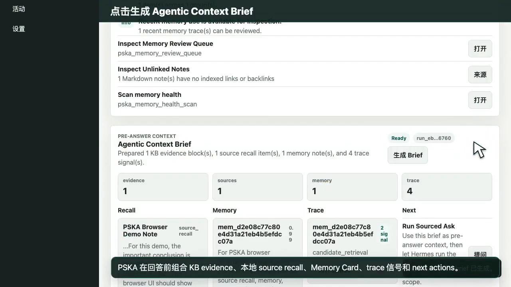
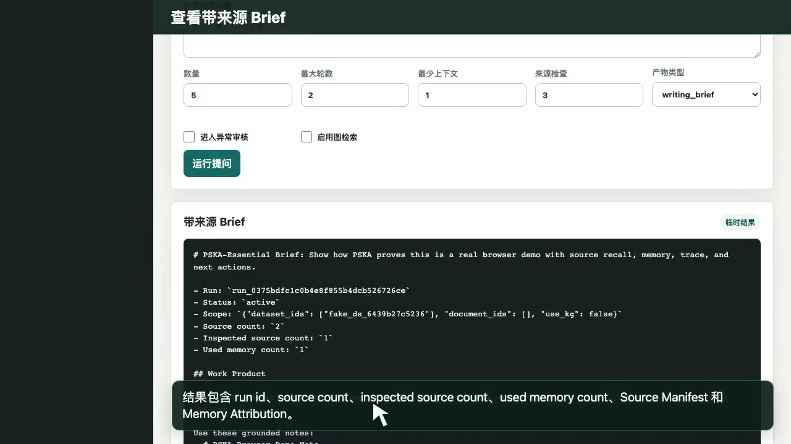
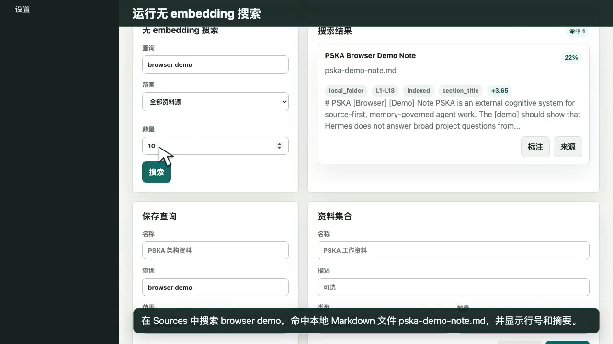

交付物
关键证据帧

Agentic Context Briefevidence、sources、memory、trace 和 next actions 同屏出现。

Sourced Briefrun id、source count、inspected source count、used memory count 可见。

无 embedding search查询 browser demo 命中本地 Markdown 文件并显示行号。
功能证据矩阵
| 功能点 | 视频时间 | 证据 |
|---|---|---|
| Home / Jarvis briefing | 00:00:05.777 - 00:00:15.713 | Product API、知识库、Jarvis、资料源和记忆信号。 |
| Agentic Context Brief | 00:00:15.713 - 00:00:29.166 | Brief 汇总 evidence、source recall、Memory Card、trace 和 next actions。 |
| Ask 与 Sourced Brief | 00:00:36.034 - 00:01:03.417 | 真实输入问题并得到带来源结果、Source Manifest 与 Memory Attribution。 |
| Loop Trace | 00:01:03.417 - 00:01:16.248 | 展示 scope、governance、readiness、retrieval、memory 与 source inspection。 |
| Memory 与 Activity | 00:01:16.248 - 00:01:46.611 | Memory Card 治理入口和 agentic_loop.complete 审计记录。 |
| Sources / no-embedding search | 00:01:46.611 - 00:02:15.266 | 本地文件夹 read_only/scanned，搜索命中 pska-demo-note.md。 |
验证
运行 python3 scripts/verify_browser_demo_pack.py 可检查视频流、字幕、manifest、poster 和本地引用。完整证据矩阵见 FEATURE_EVIDENCE_MATRIX.zh.md。